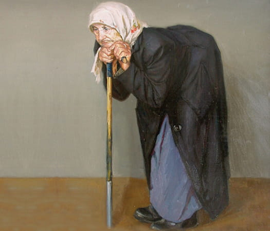

Научно-практическая конференция «Остеопороз ― системное заболевание. Взаимодействие врачей разных специальностей»
Место проведения: Конференц-зал «ЛЮКС» гранд-отеля «Ока» (г. Нижний Новгород, пр. Гагарина, 27) с online-трансляцией
Организаторы:
- Министерство здравоохранения Нижегородской области
- Приволжский исследовательский медицинский университет
- Институт клинической медицины ННГУ им. Н. И. Лобачевского
- Областной центр профилактики и лечения остеопороза на базе ГБУЗ НО «Городская клиническая больница № 3»
Оргкомитет:
- Яшина Елена Михайловна, к.м.н., врач-ревматолог, доцент кафедры внутренних болезней Института
клинической медицины ННГУ им. Н. И. Лобачевского, Н. Новгород — руководитель
программного
комитета.
Тел. 8-903-055-95-88, e-mail: ya-lena@mail.ru. - Смирнова Наталия Валентиновна, врач-терапевт, руководитель Областного центра профилактики
и лечения остеопороза на базе ГБУЗ НО «Городская клиническая больница № 3» (Нижегородский
гериатрический центр), Н. Новгород.
Тел. (831) 218-19-90, e-mail: nets1971@ya.ru. - Малышева Татьяна Борисовна, врач-травматолог кабинета профилактики и лечения остеопороза Института травматологии Университетской клиники ПИМУ, Н. Новгород.
- Воловатова Ирина Николаевна, к.м.н., врач-ревматолог первой категории, доцент кафедры факультетской и поликлинической терапии ПИМУ, Н. Новгород.
Основные направления работы конференции:
- Новые возможности в диагностике остеопороза.
- Коморбидный пациент с остеопорозом.
- Статус витамина D у пациентов в разных возрастных группах.
- Роль витамина D в метаболических и иммунных процессах.
- Лечение дефицита витамина D при ХБП.
- Микробиом кишечника и уровень витамина D. Есть ли связь?
- Остеопороз в практике акушера-гинеколога.
- Профилактика и лечение остеопороза у женщин с преждевременной менопаузой.
- ЗГТ в профилактике остеопороза у женщин в постменопаузе.
- Пациент с остеопорозом и сахарным диабетом.
- Нарушение костного обмена при патологии щитовиднй железы.
- Остеопороз и ревматоидный артрит.
- Профилактика и лечение глюкокортикоидного остеопороза.
- Переломы при остеопорозе. Профилактика и лечение повторных переломов.
- Саркопения как фактор риска падений и переломов.
- Остеоартроз и остеопороз: точки соприкосновения.
- Дифференцированный подход к купированию болевого синдрома.
- Вопросы реабилитации пациентов с остеопорозом.